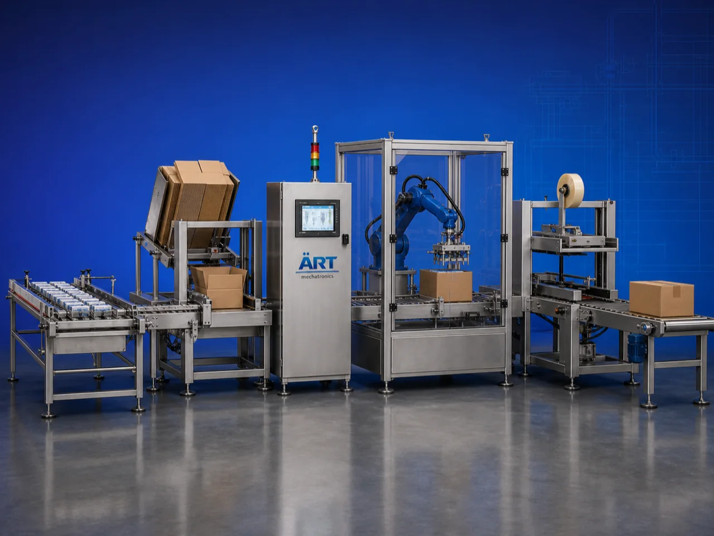

Secondary Packaging Automation System (Automatic End of Line Packaging Solutions)
A Secondary Packaging Automation System, also known as an End of Line Packaging System, Secondary Packing Line, Automatic Packaging Automation System, or Industrial Packaging Integration System, is an advanced industrial automation solution designed for automatic product handling, collating,…

About the Secondary Packaging Automation
Secondary packaging automation systems are widely used for: ✔ Cartoning operations ✔ Case packing systems ✔ Shrink wrapping applications ✔ Tray packing operations ✔ Palletizing systems ✔ Bundle packaging ✔ Multipack packaging ✔ End-of-line packaging automation
The system improves: ✔ Packaging speed ✔ Production efficiency ✔ Product handling accuracy ✔ Packaging consistency ✔ Labor reduction ✔ Warehouse logistics efficiency ✔ Export packaging quality
Industrial secondary packaging automation systems use: ✔ Robotic handling systems ✔ Servo synchronized packaging equipment ✔ PLC and HMI automation controls ✔ Conveyor integration systems ✔ Intelligent product handling mechanisms
to automatically perform complete secondary packaging operations with superior accuracy and high production efficiency.
Secondary packaging automation systems are widely used in industries such as:
Food processing industries Beverage industries Chemical industries Cosmetic industries Pharmaceutical industries Lubricant industries Agro industries FMCG industries
where high-speed packaging automation, labor optimization, and export-quality packaging are essential.
The system is highly suitable for: ✔ Bottle secondary packaging ✔ Pouch case packing ✔ Carton automation systems ✔ Industrial palletizing operations ✔ Multipack packaging ✔ Complete end-of-line automation
ART Mechatronics offers high-performance secondary packaging automation systems, engineered for continuous industrial operation, intelligent packaging integration, high-speed handling performance, and reliable long-term industrial automation.
Working Principle of Secondary Packaging Automation System
- 1. Product Infeed & Conveyor Handling Primary packaged products are automatically transferred through synchronized conveyor systems.
- 2. Product Counting & Collating Process Machine automatically counts, groups, arranges, and collates products before secondary packaging operation.
Servo synchronization ensures smooth product flow and accurate grouping operations.
- 3. Secondary Packaging Operation System handles: ✔ Bottles ✔ Pouches ✔ Sachets ✔ Bags ✔ Jars ✔ Cartons ✔ Cans ✔ Industrial packaged products
accurately and continuously.
- 4. Packaging Integration Process Machine performs: Cartoning Case packing Shrink wrapping Tray packing Bundle wrapping Palletizing Labeling Barcode coding
for efficient and export-ready packaging operations.
- 5. Intelligent Automation & Inspection Integration Optional systems include: Vision inspection systems Robotic pick & place systems Barcode verification Weight inspection systems Automatic rejection systems
- 6. Finished Product Discharge Finished secondary packed products discharged automatically for: Warehouse storage Pallet handling Retail distribution Export shipment operations
Types of Secondary Packaging Automation Systems
- 1. Automatic Cartoning System Designed for: ✔ Retail carton packaging applications
- 2. Robotic Case Packing System Suitable for: ✔ High-speed industrial case packing operations
- 3. Shrink Wrapping Automation System Uses: ✔ Tamper-proof multipack packaging systems
- 4. Tray Packing & Bundling System Designed for: ✔ Bulk retail packaging operations
- 5. Robotic Palletizing System Suitable for: ✔ Warehouse and export logistics handling systems
- 6. Fully Integrated End of Line Packaging System Designed for: ✔ Complete industrial packaging automation lines
Industries Using Secondary Packaging Automation Systems
🥤 Beverage Industry Water bottles, soft drinks, juices, and beverage multipack packaging systems. 🍅 Food Processing Industry Pouches, sauces, snacks, spices, edible oils, and food packaging systems. ⚗️ Chemical Industry Industrial products, lubricants, and chemical packaging automation systems. 🧴 Cosmetic & Personal Care Industry Perfumes, lotions, shampoos, and cosmetic packaging systems. 💊 Pharmaceutical Industry Medicine cartons, bottles, and healthcare packaging automation systems. 🛒 FMCG Industry Consumer products and retail packaging automation systems.
Features & Advantages
✔ High-speed automatic secondary packaging operation ✔ Intelligent product handling and grouping systems ✔ Complete end-of-line packaging automation ✔ PLC and servo automation control systems ✔ Improves production efficiency and logistics handling ✔ Reduces labor dependency and packaging errors ✔ Supports multiple packaging formats and products ✔ Reliable long-term industrial performance ✔ Smooth and continuous packaging line integration
Technical Highlights
System Type: Secondary packaging automation system End of line packaging system Industrial packaging automation line Product Compatibility: Bottles Pouches Sachets Jars Bags Cartons Cans Packaging Integration: Cartoning systems Case packing systems Shrink wrapping systems Palletizing systems Robotic handling systems Features: PLC control system Servo synchronization Touchscreen HMI Vision inspection systems Robotic automation integration Applications: Food products Beverages Chemicals Cosmetics Pharmaceutical products Industrial packaged products Automation: Semi-automatic Fully automatic industrial systems
Turnkey Secondary Packaging Solutions
ART Mechatronics offers: Complete end-of-line packaging systems Automatic packaging automation solutions Robotic packaging integration systems Conveyor synchronization systems Installation & commissioning After-sales service & AMC
Why Choose Art Mechatronics
Expertise in industrial packaging and automation systems Customized secondary packaging solutions for multiple industries High-performance and intelligent automation technology Advanced PLC, servo, and robotic systems Proven industrial packaging performance across sectors
Applications
Food Processing Plants Beverage Manufacturing Facilities Chemical Packaging Industries Cosmetic Packaging Units Pharmaceutical Packaging Plants FMCG Packaging Industries
Related Automation & Robotics machines
Get pricing & specs for the Secondary Packaging Automation
Share the product, target capacity, current process and plant location. These details help our engineers discuss the right machine or line configuration.
One partner, from design to start-up
ART Mechatronics designs, manufactures, installs and commissions your Secondary Packaging Automation solution with regional presence in India, UAE and Thailand.